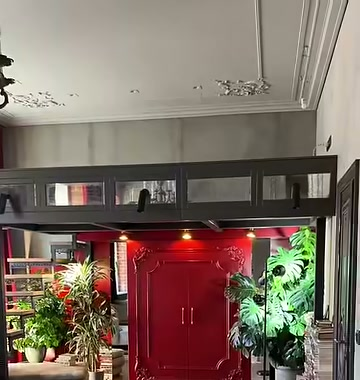
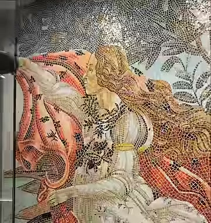
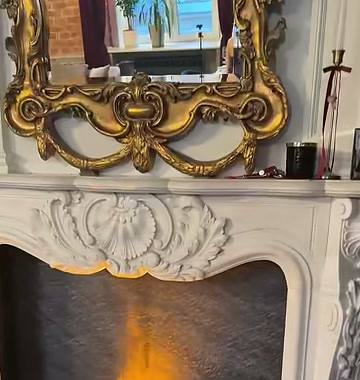
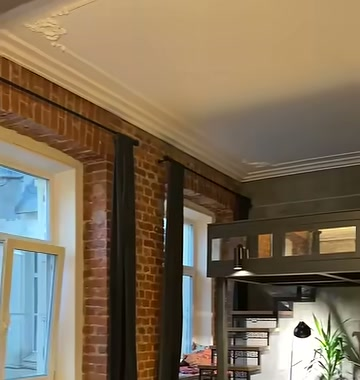
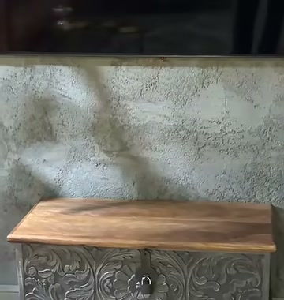
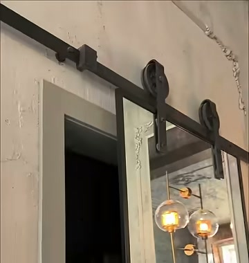
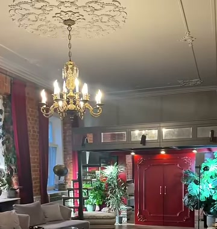
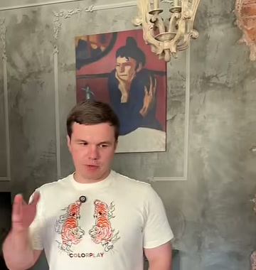
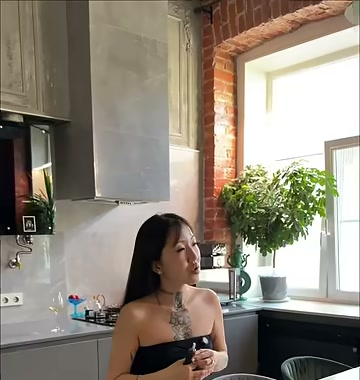
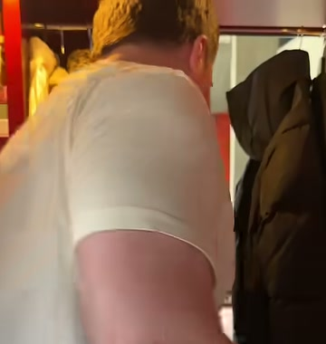

Длинные выпуски о квартирах, которые смотрят до конца
Ваши шортсы уже собирают миллионы. Длинным выпускам нужна картинка и монтаж, которые удержат зрителя на 40–60 минут. Снимаю и монтирую под ключ: обзор квартиры, интервью с владельцем, графика и звук в стиле канала.
съёмочный день без ограничения по часам2 полнокадровые камерыSony A7 V · 4K 10-bitсвет для интервьюмонтаж до 1 часапод ключ
1,28 млну шортса «Квартира-Нарния», где будет ближайший выпуск
113 тыс.у длинного выпуска про коммуналку за три недели
Что уже работает
Сами квартиры: необычные, с историей, каких не увидишь в объявлениях
Живой ведущий и хозяева, которые рассказывают с азартом
Предметы с легендой: печь «как в музее», мозаика, шкаф-проход
Короткие ролики дают охват, а зрители сами просят полную версию
Что сдерживает длинные выпуски
Снято неплохо, но на iPhone с рук: широкий модуль заваливает стены и вертикали, шаги дают тряску
Свет из окна и от ламп разной температуры, экспозиция прыгает при переходе из комнаты в комнату
Интервью снято одним планом, без света и второго ракурса, глазу не за что зацепиться
Выпуски по 1–1,8 часа почти без монтажа: нет интро, глав, графики и ритма, зритель уходит на середине
02
Квартира-Нарния: что в ней есть для сильного выпуска
Вы снимаете ближайший выпуск в той же квартире, что и шортс. Пересмотрел его по кадрам и выписал всё, что станет крючками и сценами.
Ваш шортс, 1,28 млн просмотров

Шкаф-портал
Красные двери под антресолью, сквозь шубы проход в комнату брата. Главная тайна выпуска.

Венера из смальты
Мозаика по Боттичелли в санузле. Макро и боковой свет покажут, как блестит каждый кусочек.

Камин и золотое зеркало
Огонь крупно, отражение в раме. Тёплая атмосферная перебивка.

Антресоль и лестница
Подъём наверх и вид сверху на весь зал: лучший кадр, чтобы показать масштаб.

Граммофон и сундук
Граммофону около ста лет, и он играет. Заводим вживую, и пластинка становится музыкой интро.

Детали ремонта
Дверь-зеркало на рельсе, лепнина, кирпич, люстры. Каждая деталь — короткий слайд крупным планом.
Кадры из вашего шортса, снятого на iPhone. Использую их как карту объектов для раскадровки.
03
Раскадровка: первые 40 секунд
Интро решает, останется ли зритель. Начинаем не с приветствия, а с тайны: шкаф открывается, и мы не показываем, что внутри.
Холодное начало «Квартиры-Нарнии»
0:00–0:40стабилизатор · макро · слоу-мозвук предметов → музыка канала
0:00

крючокТишина и скрип. Плавный проход на стабилизаторе через гостиную прямо к красным дверям. Двери открываются, камера входит в шубы, и наступает темнота.
Звук: скрип дверцы, шорох меха. Музыки пока нет.
0:05
Резкая склейка из темноты на макро. Медленный проезд по мозаике Венеры: смальта вспыхивает в боковом свете. Хозяйка за кадром: «итальянские мастера придумали…»
0:10
Игла граммофона опускается на пластинку. Треск, первые ноты, и они переходят в музыку интро канала.
Звук: живая пластинка становится саундтреком.
0:14
Огонь крупно, отражение в золотом зеркале. Медленный наезд.
0:17

обещаниеСергей в кадре, одна фраза. «Обычная петербургская квартира. Но в её шкафу — целая комната». Взгляд на красные двери.
0:22

Хозяйка, лучшая реплика из интервью. «Изначально хотели хайтек» или «мы с мамой любим этот фильм». Её выбираем при монтаже.
0:26
Шесть кадров в бит. Лестница на антресоль, вид сверху на зал, ванна на лапах, лепнина, люстра, дверь-зеркало едет по рельсу.
Звук: вжухи и щелчки на каждой склейке.
0:33
Заставка канала. Общий план с красными дверями, название «КВАРТИРА-НАРНИЯ» крупными буквами, как на ваших обложках. Плашка: район и год дома.
0:40

Звонок в дверь, начинается выпуск. Знакомство с хозяйкой на пороге, плашка с именем.
Почему сработает: за 40 секунд зритель видит самые дорогие кадры квартиры и получает вопрос без ответа: что за шкафом? Ответ мы покажем только в финале, поэтому выпуск досматривают.
04
Раскадровка: весь выпуск
Около 50 минут, разбито на главы. Каждые 2–3 минуты новый крючок: предмет, история, цифра или вопрос.
Структура выпуска
40–60 минутглавы в описании YouTubeграфика и плашки в стиле канала
0:00
Интро — раскадровка выше.
0:40
Знакомство и гостиная. Как квартира досталась по наследству и почему сначала хотели разделить её и сдавать. Сергей замечает красные двери: «туда потом». Плашки-факты: площадь, высота потолков, год дома.
6:00
Кухня: от хайтека к классике. Хозяйка рассказывает, как передумали. Монтаж «было → стало», если есть фото до ремонта, они появляются шторкой.
11:00
крючокАнтресоль. Подъём по лестнице одним кадром, вид сверху на весь зал. Перед этим подводка: «самое дорогое помещение квартиры — санузел. Покажу через минуту».
15:00
Санузел-шедевр. Мозаика «Рождение Венеры» из смальты: макро, история мастеров, сколько времени заняла работа. Ванна на лапах, старинный бачок с цепочкой.
21:00
Рубрика «Вещь с легендой». Граммофон, сундук, зеркало, камин. Каждый предмет получает карточку в стиле музейной этикетки: что это, год, откуда.
27:00
сердце выпускаИнтервью сидя. Свет, две камеры, разговор без спешки. Это то, чего не дают шортсы: личность хозяйки и честные ответы. Вопросы ниже.
42:00
развязкаПроход в Нарнию. Сергей открывает шкаф, раздвигает шубы, и камера на стабилизаторе одним непрерывным кадром проходит в комнату брата. Реакция крупно со второй камеры.
47:00
Сколько стоит такая квартира. Оценка Сергея как эксперта по недвижимости, плашка с цифрой. Приглашение на консультацию в агентство и аутро канала.
Почему сработает: у выпуска есть завязка (шкаф), нарастание (комнаты и предметы), кульминация (интервью и проход) и польза (цена от эксперта). Зритель смотрит историю, а не экскурсию, и остаётся до конца, где стоит призыв в агентство.
Ещё бонус: проход через шкаф, мозаика и граммофон — готовые сюжеты для новых шортсов из этого же съёмочного дня.
05
Интервью в стиле «Вписки» и Дудя
Отдельная сцена выпуска с постановкой света. Разговор выглядит как студийное шоу, но в интерьере самой квартиры. Предлагаю два варианта постановки.
Вариант 1 · две камеры
Как снимаю
Камера A — общий план двоих, видно атмосферу квартиры
Камера B — крупный план гостьи на светосильной оптике, фон мягко размыт
Мягкий ключевой свет на лица и контровой, чтобы люди отделились от фона. Тёплые лампы квартиры остаются в кадре
Радиомикрофоны на обоих и резервная запись: звук не потеряется
Камеры и звук сведены по времени, монтаж переключает планы на реакциях
Вариант 2 · три камеры, как в студии
Как снимаю
Камера A — общий план: ведущий и гостья за столом или в креслах, видно квартиру
Камера B — поясной план гостьи из-за плеча ведущего
Камера C — поясной план ведущего из-за плеча гостьи
Свой ключевой и контровой свет на каждого: оба плана выглядят одинаково дорого
Монтаж переключает «вопрос — ответ — реакция», как в профессиональных студийных интервью
Вопросы-ориентиры (готовим вместе с Сергеем)
Как вам досталась эта квартира и что здесь было до вас?
Почему передумали делать хайтек? Кто первым сказал слово «Нарния»?
Сколько длился ремонт и что оказалось самым сложным, включая согласование с соседями?
Во что обошлась мозаика, если готовы назвать?
Что говорят гости, когда впервые открывают шкаф?
Какую одну вещь вы вынесете из квартиры, если придётся?
Продали бы её? За какую сумму?
Блиц: пять быстрых вопросов, ответ одним словом.
06
Что изменится в картинке
На iPhone вы уже доказали, что тема заходит. Профессиональная съёмка нужна, чтобы длинные выпуски выглядели как шоу и усиливали доверие к агентству.
Сейчас, iPhone
Со мной
Камера
Маленькая матрица телефона, шумит в тёмных комнатах
Полнокадровые Sony A7 V и ZV-E1: чистая картинка и вечером, и в санузле без окон
Оптика
Широкий модуль 0,5× заваливает стены и искажает людей у краёв
Sony 16-35 GM II держит ровные вертикали в тесных комнатах, Sigma 35 f/1.4 даёт размытый фон на интервью
Движение
С рук, шаги ведущего видны в кадре
Стабилизатор DJI RS 4 Pro: плавные проходы, как в дорогих обзорах недвижимости
Свет и цвет
Экспозиция и баланс белого скачут от комнаты к комнате
Ручные настройки, 4K 10-bit, свет на интервью, единый цвет в DaVinci Resolve
Детали
Предметы снимаются мимоходом
Макро, слайды и замедления на мозаике, граммофоне и лепнине
Монтаж
Исходник почти целиком, 1–1,8 часа
Выпуск до часа с интро, главами, графикой, музыкой и звуковым дизайном
07
Стоимость пробного выпуска
Съёмка и монтаж под ключ
Первый выпуск — по пробной цене
15 000 ₽
Это заметно ниже рынка. Хочу, чтобы вы увидели разницу на своём канале, а дальше обсудим постоянную работу.
Оплата: 50% до съёмки, 50% после сдачи.
Весь съёмочный день без ограничения по часам
Обзор квартиры: проходы на стабилизаторе, детали крупно, замедления
Интервью с владельцем в стиле «Вписки» и Дудя: постановка света, две камеры
Две полнокадровые камеры Sony, 4K 10-bit, светосильная оптика
Звук на радиомикрофоны, чистка голоса
Сведение камер и звука
Монтаж выпуска длиной до 1 часа, цветокоррекция
Интро, аутро и заставки в стилистике канала
Моушн-графика и плашки: имена, факты о квартире, цены, главы
Звуковые эффекты и лицензионная музыка
Готовый файл 4K для YouTube
2 круга правок
Фотографии — без проблем
Беру на себя фото квартиры с обработкой: для обложки выпуска, постов и объявления о продаже. При необходимости сделаю полноценную фотосессию.
08
Как работаем
До пятницыСозвон: адрес, время, вопросы для интервью, пожелания по стилю
ПятницаСъёмочный день: обзор, детали, интервью
7–10 днейМонтаж, цвет, графика, музыка и звук
До 2 круговПравки и готовый файл для YouTube
Что понадобится от вас
Адрес и время, согласие хозяйки на свет и небольшую перестановку на время интервью (около часа на установку)
Логотип и шрифты канала, если есть. Если нет, соберу стиль по вашим обложкам
Темы и вопросы, которые точно нужно задать, и что нельзя показывать в квартире
Фото квартиры до ремонта, если сохранились: сделаем «было → стало»